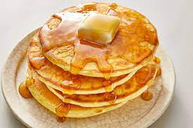

Pancakes

What are Pancakes?
Pancakes are weird right. Put some eggs in and some other stuff and these looking things come out. They taste alright so you should make them.
Ingredients
- 1½ cups all-purpose flour
- 3½ teaspoons baking powder
- ¼ teaspoon salt, or more to taste
- 1 tablespoon white sugar
- 1¼ cups milk
- 1 egg
- 3 tablespoons butter, melted
How to make it
- In a large bowl, sift together the flour, baking powder, salt and sugar. Make a well in the center and pour in the milk, egg and melted butter; mix until smooth.
- Heat a lightly oiled griddle or frying pan over medium-high heat. Pour or scoop the batter onto the griddle, using approximately 1/4 cup for each pancake. Brown on both sides and serve hot.
Back to Homepage